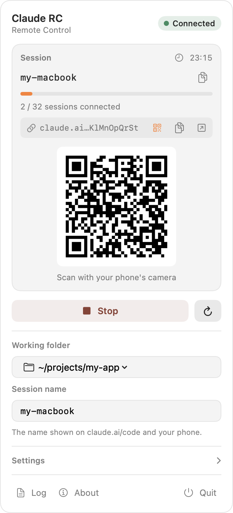

Claude RC is a tiny macOS menu bar app that keeps claude remote-control running, shows who is connected, and tells you when the line drops. Scan the QR code and pick up the session on your phone or at claude.ai/code.
curl -fsSL https://raw.githubusercontent.com/erenbekman/claude-rc-menubar/main/install.sh | bash
macOS 13+ · Apple silicon & Intel · Swift & SwiftUI, no dependencies · MIT

Remote control is only useful if it is actually running when you reach for your phone. Everything here exists for that.
One click to start or stop. It launches at login, starts the server a few seconds later, and if the process dies it retries five times with growing delays.
The environment link is one tap away as a QR code. Point your phone's camera at the panel and you are in the session. No copying, no typing.
A notification when the connection drops, when it comes back, when the server stops for good, and when a new session attaches. Click one to open the panel.
Signals are caught and the child is stopped cleanly; a PID file cleans up anything left by a crash. Starting a second server in the same folder asks first.
Optionally keeps the Mac from idle sleep while the server runs. The log drops the TUI's repeated redraws and never grows past 512 KB.
Pick a fixed session name and it is turned into the same a-z0-9- slug Claude uses, so the name on your phone is the one you expect.
It runs the same command you would type yourself, then reads what the server prints.
Choose the project Claude should work in. Trust it once by running claude there in a terminal.
The server connects; the panel shows the session name, uptime and how many of the 32 slots are in use.
Scan the QR code, or open claude.ai/code on any device. Your Mac does the work; your phone holds the remote.
# what Claude RC starts /bin/zsh -lc "cd ~/projects/my-app && exec claude remote-control --name my-macbook" # what it reads back from the server ✔ Connected · Capacity: 2/32 https://claude.ai/code?environment=env_01AbCd…
You need macOS 13 or later and the Claude Code CLI, signed in.
Claude RC started as ocracy's project. This version adds the interface and the distribution around it.
Process management for claude remote-control, orphan protection, duplicate-server warnings, log trimming, launch at login and session naming.
The SwiftUI panel and its design, the icon, QR code, notifications, universal builds, the installer and releases.